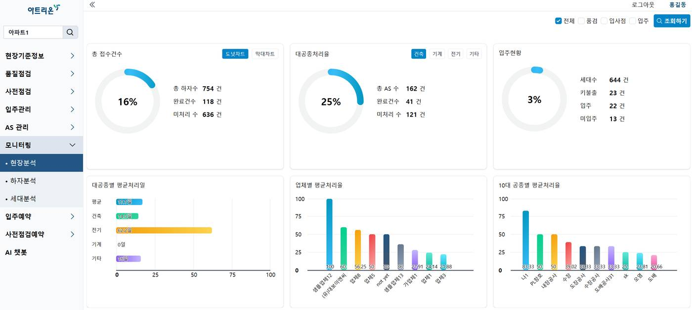
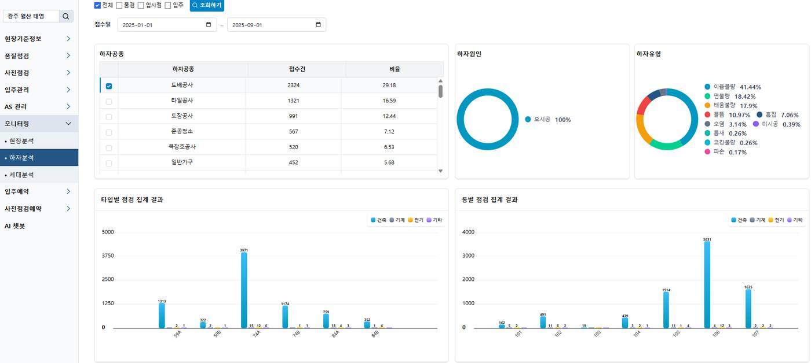

주요 성과
- Spring Boot 개인 서비스를 혼자 개발해 8주 만에 공개했고, 지금도 운영하고 있습니다.기획부터 백엔드, 앱, 서버 배포까지 1인 개발. REST API 194개, 자동 테스트 310건
- 배치 작업의 N+1 문제를 고쳐 DB 조회를 38,230회에서 5~6회로 줄였습니다.사용자 3만 8천 명의 레벨 승급을 계산하다 메모리 부족으로 멈추던 배치
- 구글 로그인 장애를 30분 안에 알아내는 모니터링 봇을 만들었습니다.사용자 문의로만 알던 장애를, 30분마다 실제 로그인을 시도하는 봇으로 먼저 발견
- GPT 질문 추천 기능에 출력 검증 단계를 넣었습니다.자녀가 요약만 공개한 일기의 세부 내용이 부모용 질문에 나오던 문제를 찾아, 테스트한 위험 사례 5종을 모두 차단
- 협력 대학이 학습한 SLM 모델을 학생 일기 서비스에 연동했습니다.모델이 응답하지 않아도 위험한 일기를 놓치지 않게 설계, 누적 2,284건 처리
프로젝트
-
2026.07 ~ 현재
운영 중다시잇다
개인 프로젝트, 1인 개발과 운영
오래 연락이 끊긴 사람과의 관계를 다시 잇도록 돕는 앱입니다. 기획부터 백엔드, 앱, 배포, 운영까지 혼자 했습니다.
- Spring Boot 4.1과 Java 21로 REST API 194개를 만들었고, PostgreSQL 테이블 37개는 Flyway로 변경 이력을 관리합니다.
- JWT 액세스 토큰과 리프레시 토큰 회전을 구현했고, 카카오와 구글 로그인은 서버에서 토큰을 검증합니다.
- NCP 서버에 Docker Compose와 Nginx로 배포합니다. 새 버전이 정상 응답할 때만 교체하고, 배포 전에는 DB를 백업합니다.
- 캐시가 있는데도 AI API가 매번 다시 호출되던 문제를 추적해 트랜잭션 버그 2건을 고쳤고, 기존 테스트가 이 버그를 못 잡은 이유까지 확인해 테스트를 보강했습니다.
- Claude Code로 개발하면서 작업 규칙 문서(CLAUDE.md)와 결정 기록을 두고, 테스트와 타입 검사를 통과한 코드만 커밋합니다. GitHub Actions가 한 번 더 확인합니다.
저장소는 비공개입니다. 면접에서 코드와 화면을 보여 드릴 수 있습니다.
Java 21, Spring Boot 4.1, JPA, PostgreSQL 16, Flyway, React Native(Expo), TypeScript, Claude API, Docker Compose, Nginx, GitHub Actions
-
2026.04 ~ 2026.09
Seamspace Family
테바소프트, 초등 자녀와 부모가 함께 쓰는 가족 앱
- 기획 담당자가 없어 시장 조사와 관련 법 규제를 직접 정리하고, 사업 방향 4가지를 비교한 대표 보고서를 썼습니다. Django와 Flutter 프로토타입으로 설계를 먼저 검증했습니다.
- 수만 줄 규모의 기존 백엔드에 가족 기능을 별도 모듈로 분리해 넣었고, 기존 테이블은 컬럼 1개만 바꿨습니다. 학생앱 코드는 고치지 않고, 서버가 기존 API 응답에 가족 설정값을 넣어 주는 방식으로 자녀 계정을 연결했습니다.
- 자녀가 정한 일기 공개 범위(전체, 요약, 비공개)를 서버 API에서 강제하고 테스트로 고정했습니다. 가족 기능 백엔드 테스트는 111건입니다.
- GPT로 부모용 대화 질문을 추천하는 기능을 만들었습니다. 위험한 표현은 모델을 부르기 전에 규칙으로 거르고, 결과에 일기 속 구체적인 내용이 남아 있으면 다시 생성합니다.
- 부모앱은 Flutter에서 React 18과 TypeScript로 다시 구현했습니다(Claude Code 활용).
운영 배포 전 단계입니다. 사내 테스트 서버에서 대표와 개발팀이 확인하는 상태까지 만들고 인수인계했습니다.
Python, Django, Celery, MySQL, Redis, Flutter, React 18, TypeScript, OpenAI API, Nginx, systemd
-
2026.03 설계
2026.07 배포배치 작업 N+1 문제 해결
테바소프트, 학생 일기 앱 백엔드
사용자 3만 8천 명의 레벨 승급을 계산하는 배치가 에러 로그 없이 중간에 멈췄습니다. 로그에 시작 기록만 있어 프로세스가 메모리 부족으로 죽었다고 보고 코드를 따라가 보니, 사용자 한 명을 처리할 때마다 같은 레벨의 사용자 전체를 다시 조회해 쌓고 있었습니다.
- 레벨별로 한 번만 조회하고 승급 여부를 미리 계산해 두는 방식, 2,000건씩 나눠 읽는 방식으로 바꿔 DB 조회를 38,230회에서 5~6회로 줄였습니다.
- 같은 구조를 공개 저장소에 재현해 측정했습니다. 더미 데이터 기준으로 쿼리 5,998회가 11회로, 379초가 0.24초로 줄었습니다.
-
2026.01 ~ 2026.09
SLM 기반 위험 일기 판별 기능 연동
테바소프트, 정부 과제(대학 협력)
- 협력 대학이 학습한 SLM(Qwen2-7B + LoRA)을 HTTP API로 학생 일기 서비스에 연동했습니다. 모든 일기를 보내지 않고 GPT 감정 점수가 높은 일기만 보내 비용과 지연을 줄였습니다.
- 10초 안에 응답이 없거나 호출이 실패하면 위험으로 처리해, 모델 서버 문제로 위험한 일기를 놓치지 않게 했습니다. 위험으로 판별되면 학생에게는 13개 언어로 상담 안내를, 교사에게는 암호화된 알림을 보냅니다.
- 공인시험(DICIA) 제출용 평가 기준을 설계했습니다. 모델이 한국어와 영어 라벨을 섞어 내는 경우의 채점 규칙과, 누가 돌려도 같은 결과가 나오는 시험 스크립트를 만들었습니다. 모델 학습과 평가는 협력 대학이 맡았습니다.
Python, Django, Celery, OpenAI API, SLM(Qwen2-7B)
-
2025.04 ~ 2025.12
Atrion 관리자 대시보드
테바소프트, 건축물 하자 관리 시스템(외주)
- Vue.js와 Nuxt.js로 모니터링 대시보드의 차트 화면(시공사별, 업체별, 공종별, 동과 타입별 하자 분석)을 만들고 일부 집계 API를 Django REST로 개발했습니다.
- 고객 의견 게시판(고객의 소리)을 DB 모델부터 REST API, 화면, 엑셀 다운로드까지 직접 만들었습니다.
- 백엔드를 Docker로 컨테이너화하고 Gunicorn, Nginx, HTTPS를 설정했습니다.

현장분석 대시보드 
하자분석 화면 Vue.js, Nuxt.js, Django REST Framework, PostgreSQL, Docker, Nginx
-
2025.03 ~ 2026.09
서비스 상태 감시 봇
테바소프트, 운영 서버 밖에서 실제 사용자처럼 접속해 확인
- 로그인부터 일기 작성까지 1분마다 실행해 보는 봇과, 구글 소셜 로그인을 30분마다 확인하는 봇을 Docker로 운영했습니다. 문제가 생기면 텔레그램으로 알립니다.
- 운영 서버 설정 누락으로 구글 로그인이 전부 막혔던 일이 계기였습니다. 토큰을 백엔드와 같은 클라이언트 ID로 발급해야 서버 검증을 통과한다는 점, OAuth 동의 화면이 테스트 상태면 토큰이 7일 만에 만료된다는 점을 확인하며 만들었습니다.
Python, Docker, Google OAuth 2.0, Telegram Bot API
-
2025.02 ~ 2026.09
학생앱 QA 자동화
테바소프트, 테스트 자동화 단독 구축
- 테스트 케이스 1,511건을 관리하고 그중 882건을 자동화했습니다.
- 무한 애니메이션 때문에 테스트가 멈추는 문제를 재시도로 덮지 않고, 화면 요소가 나타날 때까지 기다리는 방식으로 바꿔 해결했습니다.
- API 응답을 점검하는 Node 테스트 도구를 새로 만들어, 2026년 9월 한 달 동안 결함 52건을 찾아 재현 로그와 함께 개발팀에 전달했습니다.
Flutter integration_test, Node.js, Playwright, Google Sheets API
-
2021.06 ~ 2022.06
심방세동 탐지 딥러닝 모델
한동대학교 BCI 연구실, 학부연구생과 팀 리더
심박 간격 데이터만으로 심방세동을 찾는 CNN-LSTM 모델을 직접 설계하고 학습했습니다. 정확도를 82%에서 99.45%로 높였고, KCC 2022에 제1저자로 발표했습니다.
Python, TensorFlow, Keras
기술
- 회사에서 쓴 기술
- Python, Django REST Framework, Celery, PostgreSQL, MySQL, Redis, Vue.js, Nuxt.js, React, TypeScript, Flutter, Docker, Nginx, OpenAI API
- 개인 프로젝트
- Java 21, Spring Boot 4.1, JPA, Flyway, React Native, Docker Compose, Claude API, GitHub Actions
- 개발 도구
- Git, Claude Code, Notion, Figma
학력과 자격
- 학력
- 한동대학교 AI·컴퓨터공학심화 졸업 (2024.02)
Vilnius University 교환학생, 리투아니아 (2022.08 ~ 2023.02) - 자격
- 정보처리기사, SQLD, OPIc IM2, TOEIC 815
- 수상
- 캡스톤 디자인 경진대회 우수상 (2022), 의료 해커톤 결선 진출 (2021)
공개 저장소
- sealo
Spring Boot와 React Native로 만든 루틴 관리 앱 (2026.07, REST API 24개, 통합 테스트 29건) - django-n-plus-one-lab
회사에서 겪은 배치 N+1 문제를 더미 데이터로 재현하고 측정한 저장소